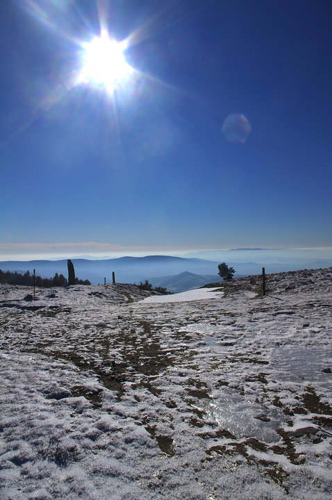
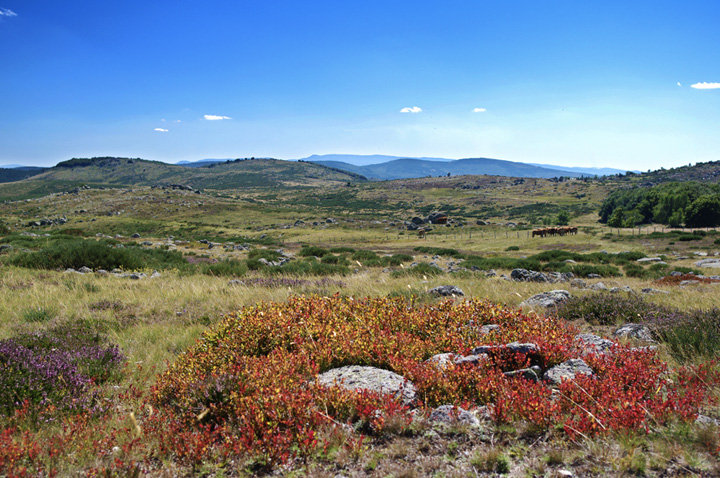
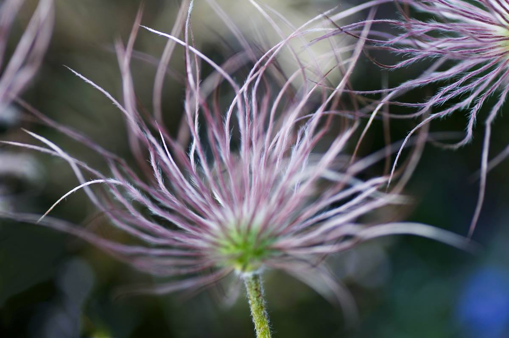

Bonjour,
que souhaitez-vous faire aujourd'hui ?
Communauté de communes des Cévennes au Mont Lozère. 19 communes, 5 260 habitants.
Vos démarches
Tous les services
Je souhaite...
Être aidé pour mes démarchesCarte grise, retraite, CAF, CV : 8 lieux d'accueil France services.Trouver un lieu
Faire garder mon enfant5 micro-crèches de 2 mois et demi à 5 ans, gérées par Trait d'Union.Demander une place
Inscrire mon enfant aux loisirsAccueils de loisirs Méli Mélo, de 3 à 12 ans, mercredis et vacances.Voir les dates
Trouver un médecinDeux maisons de santé, médecins, infirmiers, pharmacies.Annuaire santé
Prendre le busLigne 251 Mende, Florac, Alès. Ticket à 2 €, gratuit avant 4 ans.Horaires et transport solidaire
Jeter mes déchetsCollecte et déchèteries gérées par le Syndicat mixte de l'environnement Sud Lozère.Horaires des déchèteries
Rénover ou louer un logementClefs pour l'habitat en Lozère, garantie Visale.Les aides
Construire ou aménagerPLU approuvés, PLU en cours, cartes communales.Documents d'urbanisme
Demander une subventionPour les associations, dossier CERFA avant le 31 janvier.La démarche
Aucun raccourci ne correspond. Essayez un autre mot ou appelez le 04 66 65 07 79.
Près de chez moi
Les services de ma commune
Choisissez votre commune dans la liste ou sur la carte.
Commune avec un service de proximitéCommune choisie
Horaires des France services

| Lieu | Jours et horaires | Téléphone |
|---|---|---|
| Le Collet de DèzeLa Poste, place de la Forge | Mardi au vendredi 9h-12h et 14h-16h30, samedi 9h-12h | 04 66 49 78 87 |
| Pont de Montvert530 route de Finiels | Calendrier des permanences sur la plaquette | 04 34 09 06 14 |
| VialasMédiathèque, 134 rue Basse | Jeudi 10h30-12h30 et 13h30-16h | 04 66 41 04 15 |
| Saint Germain de CalberteMairie | Lundi 9h-12h30, mardi 9h-12h | 07 85 97 22 62 |
| Saint Étienne Vallée FrançaiseMairie, avenue de l'Enclos | Mardi 13h30-17h15, jeudi 8h30-12h30, vendredi 8h45-12h15 | 07 85 97 22 62 |
| Sainte Croix Vallée FrançaiseMairie | Mercredi 9h30-12h30 et 13h30-15h30, jeudi 13h30-17h | 07 85 97 22 62 |
| Ventalon en CévennesAgence postale, le Géripont | Mardi 9h-12h et 13h-16h | 04 66 45 56 15 |
| Saint Martin de BoubauxAgence postale, centre du village | Vendredi 9h-12h et 13h30-16h30 | 04 66 45 98 71 |
Actualités
Toutes les actualités À la une

Se déplacer
Transport solidaire : recherche de bénévoles
Des chauffeurs bénévoles sont recherchés pour conduire les habitants à leurs rendez-vous médicaux.

Logement
Aides pour le logement : Clefs pour l'habitat
Permanences au Collet de Dèze, à Saint Étienne Vallée Française, à Florac et à Villefort.
Vie publique
Conseil communautaire 2026 : séances du 19 janvier, du 5 mars et du 22 octobre.
Kiosque
À lire
 Le Vent des Bancels n°131
Le Vent des Bancels n°131 Le Vent des Bancels n°130
Le Vent des Bancels n°130 Bulletin communautaire n°1
Bulletin communautaire n°1
En images
Le territoire



Photographies d'Émilie Reydon. Accéder aux galeries
À voir aussi